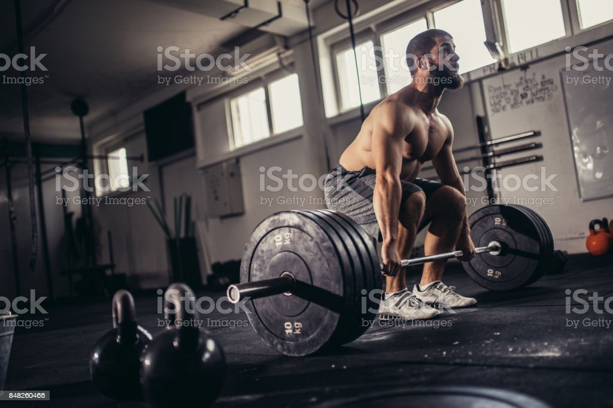

This page is dedicated to teach people about effective workout routines
One of the most effective routines that new and experienced lifters should follow is the PPL routine. otherwise known as the Push, Pull, Legs routine.

What Makes Up the PPL Routine?

Push: On push days, we focus on the muscle groups that we use during push movements. These typically include the areas of the chest, triceps, and shoulders.

Pull: On pull days, we focus on the muscle groups that we use to pull things around with. These would include the biceps and the muscles in the back.

Legs: On leg days, we focus on the majority of the lower body muscles. This is a large group and it is made up of the glutes, hamstrings, quads, and calves.

Rest: Rest days are probably the most important day in any routine. Muscle does not grow in the gym, but instead grows when you are the least active. This is due to your muscle fibers repairing post workout.
"Most people fail, not because of lack of desire, but, because of lack of commitment."
-Vince Lombardi
Lets Go! It's time to achieve your goals!
Sign up today to join the community, speak to professionals, and educate yourself on fitness!